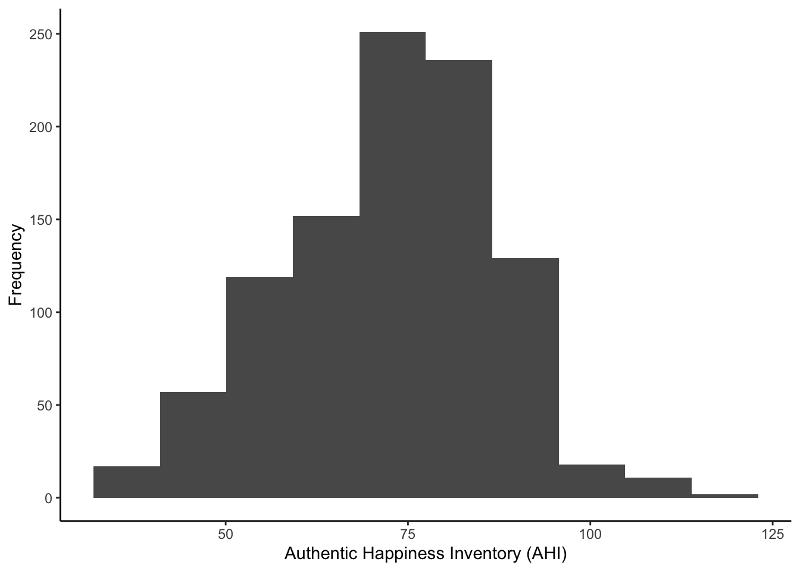
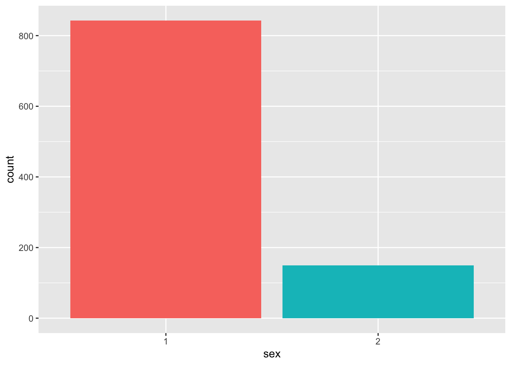

3 Introduction to Data Visualisation
In this chapter, we introduce you to data visualisation. Visualising our data and the relationships between our variables is an incredibly useful and important skill.
It is important for you before you conduct any statistical analyses or present any summary statistics. We should always visualise our data as it is a quick and easy way to check our data make sense and identify any unusual trends. It is also important for others who read your work. Data visualisation can honestly present the features of our data to anyone who reads our research and provides a faster overview of our findings than reading a wall of numbers.
Across several chapters, we introduce you to the extremely flexible ggplot2 package for data visualisation as part of the tidyverse family. In two or three lines of code, you can create plots like Figure 3.1 for exploratory data analysis. With a few extra lines, you can create publication quality plots that could go into a report.
In this chapter, we introduce you to the ggplot2 system of creating plots and cover histograms and bar plots. In future chapters, we cover different types of plot to communicate more complex data and analyses.
Chapter Intended Learning Outcomes (ILOs)
- ILO1
3.1 Chapter preparation
3.1.1 Introduction to the data set
From now on, we are going to use different data sets from psychology to develop and practice your data skills. This will prepare you for working with different kinds of psychology data and introduce you to different kinds of research questions they might ask. For this chapter, we are using open data from Woodworth et al. (2018). The abstract of their article is:
We present two datasets. The first dataset comprises 992 point-in-time records of self-reported happiness and depression in 295 participants, each assigned to one of four intervention groups, in a study of the effect of web-based positive-psychology interventions. Each point-in-time measurement consists of a participant’s responses to the 24 items of the Authentic Happiness Inventory and to the 20 items of the Center for Epidemiological Studies Depression (CES-D) scale. Measurements were sought at the time of each participant’s enrolment in the study and on five subsequent occasions, the last being approximately 189 days after enrolment. The second dataset contains basic demographic information about each participant.
In summary, we have two files containing demographic information about participants and measurements of two scales on happiness and depression:
The Authentic Happiness Inventory (AHI),
The Center for Epidemiological Studies Depression (CES-D) scale.
3.1.2 Organising your files and project for the chapter
Before we can get started, you need to organise your files and project for the chapter, so your working directory is in order. If you need a refresher of this process, you can look back over Chapter 2 - File structure, working directories, and R Projects.
In your folder for research methods and the book
ResearchMethods1_2/Quant_Fundamentals, create a new folder calledChapter_03_intro_data_viz. WithinChapter_03_intro_data_viz, create two new folders calleddataandfigures.Create an R Project for
Chapter_03_intro_data_vizas an existing directory for your chapter folder. This should now be your working directory.Create a new R Markdown document and give it a sensible title describing the chapter, such as
03 Introduction to Data Visualisation. Delete everything below line 10 so you have a blank file to work with and save the file in yourChapter_03_intro_data_vizfolder.Download these two data files which we used at the end of Chapter 2. Data file one: ahi-cesd.csv. Data file two: participant-info.csv. Right click the links and select “save link as”, or clicking the links will save the files to your Downloads. Make sure that both files are saved as “.csv”. Do not open them on your machine as often other software like Excel can change setting and ruin the files. Save or copy the file to your
data/folder withinChapter_03_intro_data_viz.
You are now ready to start working on the chapter!
Add hidden guidance for people using the server
3.2 Loading the tidyverse and reading data files
3.2.1 Activity 1 - Loading the tidyverse package
For everything we do in this chapter and almost every chapter from now, we need to use the tidyverse package. The tidyverse is a package of packages, containing a kind of ecosystem of functions that work together for data wrangling, descriptive statistics, and visualisation. So let’s load that package into our library using the library() function.
To load the tidyverse, below line 10 of your RMarkdown document, create a code chunk, type the following code into your code chunk, and run the code:
Remember that sometimes in the console or below your code chunk, you will see information about the package you have loaded. If you see an error message, be sure to read it and try to identify what the problem is. For example, if you are working on your own computer, have you installed tidyverse so R/RStudio can access it? Are there any spelling mistakes in the function or package?
Remember though, not all messages are errors, tidyverse explains what packages it loaded and highlights function name clashes. See activity 3 and 4 from Chapter 1 if you need a refresher.
3.2.2 Activity 2 - Reading data files using read_csv()
Now we have loaded tidyverse, we can read in the data we need for the remaining activities. “Read” in this sense just means to bring the data into RStudio and store it in an object, so we can work with it.
We will use the function read_csv() that allows us to read in .csv files. There are also functions that allow you to read in Excel files (e.g. .xlsx) and other formats, but in this course we will only use .csv files as they are not software specific, meaning they are more accessible to share, promoting our open science principles.
Where does
read_csv() come from?
When we describe tidyverse as a package of packages, the read_csv() function comes from a package called readr. This is one of the packages that tidyverse loads and contains several functions for reading different kinds of data.
Create a new code chunk below where you loaded tidyverse, type the following code, and run the code chunk:
To break down the code:
First, we create an object called
datthat contains the data in theahi-cesd.csvfile withindata/.Next, we create an object called
pinfothat contains the data in theparticipant-info.csvfile withindata/.Both lines have the same format of
object <- function("folder/datafile_name.csv")Remember that
<-is called the assignment operator but we can read it as “assigned to”. For example, the first line can be read as the data indata/ahi-cesd.csvis assigned to the object calleddat.
Error mode
There are several common mistakes that can happen here, so be careful how you are typing the code to read in the data.
You need the double quotation marks around the data file name, so R recognises you are giving it a file path.
Computers are literal, so you must spell the data file name correctly. For example, R would not know what
data/participant-inf.csvis. This is where pressing the tab key on your keyboard can be super helpful, as you can search and auto-complete your files and avoid spelling mistakes.For the same reason as spelling mistakes, you must add the .csv part on the end to tell R the specific file you want.
You must point R to the right folder relative to your working directory. If you typed
ahi-cesd.csv, you would receive an error as R would look in your chapter folder whereahi-cesd.csvdoes not exist, rather than within thedata/folder you stored it in.
If you have done this activity correctly, you should now see the objects dat and pinfo in the environment window in the top right of RStudio. If they are not there, check there are no error messages, check the spelling of the code and file names, and check your working directory is Chapter_03_intro_data_viz.
Be careful to use the right
read_csv() function
There is also a function called read.csv(). Be very careful not to use this function instead of read_csv() as they have different ways of naming columns. For the activities and the assignments in RM1 and RM2, we will always ask and expect you to use read_csv(). This is really a reminder to watch spelling on functions and to be careful to use the right functions, especially when the names are so close.
3.2.3 Activity 3 - Wrangling the two data sets
For this final preparation step, we would like you to add the following code. We are not tackling data wrangling until the next chapter, so we are not going to fully explain the code just yet. Copy the code (if you hover over the code, there is a copy to clipboard icon in the top right) and paste it into the code chunk below where you read the two data files, then run the code again.
For a brief overview, we are joining the two data files by common columns (“id” and “intervention”) to create the object all_dat. We are then selecting 8 columns from the original 54 to make the data easier to work with in summarydata.
This final object summarydata is the source of the data we will be working with for the rest of this chapter.
3.2.4 Activity 4 - Exploring the data set
Before we start plotting, it is a good idea to explore the data set you are working with. There is a handy function called glimpse() which provides an overview of the columns and responses in your data set.
Create a new code chunk below where you read and wrangled the data, and type and run the following code:
Rows: 992
Columns: 8
$ ahiTotal <dbl> 32, 34, 34, 35, 36, 37, 38, 38, 38, 38, 39, 40, 41, 41, 4…
$ cesdTotal <dbl> 50, 49, 47, 41, 36, 35, 50, 55, 47, 39, 45, 47, 33, 27, 3…
$ sex <dbl> 1, 1, 1, 1, 1, 1, 2, 1, 2, 2, 1, 2, 1, 2, 2, 1, 1, 1, 1, …
$ age <dbl> 46, 37, 37, 19, 40, 49, 42, 57, 41, 41, 52, 41, 52, 58, 5…
$ educ <dbl> 4, 3, 3, 2, 5, 4, 4, 4, 4, 4, 5, 4, 5, 5, 5, 4, 3, 4, 3, …
$ income <dbl> 3, 2, 2, 1, 2, 1, 1, 2, 1, 1, 2, 1, 3, 2, 2, 3, 2, 2, 2, …
$ occasion <dbl> 5, 2, 3, 0, 5, 0, 2, 2, 2, 4, 4, 0, 4, 0, 1, 4, 0, 5, 4, …
$ elapsed.days <dbl> 182.025139, 14.191806, 33.033831, 0.000000, 202.096887, 0…
Where does
glimpse() come from?
The glimpse() function comes from a package called dplyr, which is part of the tidyverse. This package contains many functions for wrangling data like joining data sets and selecting columns. We will explore loads of functions within dplyr in the next few chapters on data wrangling.
This function provides a condensed summary of your data. You can see there are 992 rows and 8 columns. You see all the columns names for each variable in the data set. You can also see that all the variables are automatically considered as numeric (in this case double represented by <dbl>). Treating categorical variables like “sex” and “income” as numbers will cause us problems later, but it is fine for the variables we will be working on now.
3.3 ggplot2 and the layer system
There are multiple approaches to data visualisation in R but we will use ggplot2 which uses a layered grammar of graphics where you build up plots in a series of layers. You can think of it as building a picture with multiple elements that sit over each other.
Figure 3.2 adapted from Nordmann et al. (2022) demonstrates the idea of building up a plot by adding layers. One function creates the first layer, the basic plot area, and you add functions and arguments to add additional layers such as the data, the labels, the colors etc. If you are used to making plots in other software, this might seem a bit odd at first, but it means that you can customise each layer separately to make complex and beautiful figures with relative ease.
You can get a sense of what plots are possible from (the website data-to-viz, but we will build up your data visualisation skills over the courses.

3.4 Histograms and density plots
We are going to plot the distribution of participant age in a histogram, and add layers one-by-one to demonstrate how we build the plot step-by-step.
3.4.1 Step 1: Start with the ggplot function
This first layer tells R to access the ggplot function.
The first argument tells R to plot the summarydata dataframe. In the aes function, you specify the aesthetics of the plot, such as the axes and colours. What you need to specify depends on the plot you want to make (you will learn more about this later).
For a basic histogram, you only need to specify the x-axis (the y-axis will automatically be counts).
For each step, type the code in a new code chunk and run it after we add each layer to see it’s effect.
R Markdown tip of the chapter: Add code comments
After we introduced you to R Markdown to create reproducible documents in Chapter 2, we are going to add a tip in every chapter to demonstrate extra functionality.
In the code chunk above, we added a code comment by adding a hash (#). In code chunks and scripts, you can add a comment which R will ignore, so you can explain to yourself what the code is doing. In R Markdown, you can combine adding notes to yourself outside and inside the code chunks.
Code comments help explain what the code is doing and why you added certain values. It might seem redundant for simple functions, but as your code becomes more complex, you will forget what it is doing when you return to it after days, months, or years. Future you will thank past you.
3.4.2 Step 2: Add the geom_histogram layer
You can see that the code above produces an empty plot, because we have not specified which type of plot we want to make.
We will do this by adding another layer: geom_histogram(). A geom is an expression of the type of plot you want to create. For this variable, we want to create a histogram which is a type of plot showing the frequency of each observation.
You will see that you add the layers by adding a + at the end of each layer. As you read new code, try and read it line by line to walk through what it is doing. You can interpret + as “and then”. So, you could describe the plot as currently saying “plot the age variable from summary data, and then add a histogram”.
3.4.3 Step 3: Edit the histogram bins
In just two lines of code, we have a histogram! For exploratory data analysis, this is how ggplot2 is such a flexible and quick tool to get a visual overview of your data.
After running the last code chunk, you might have noticed a message warning you about the bin width: stat_bin() using bins = 30. A histogram describes the frequency of values within your variable. To do so, it must collect the values into “bins”. By default - the warning ggplot2 gives you - it uses 30 bins, meaning it tries to plot 30 bars. Depending on the granularity of your data, you might want more or fewer bins.
You can control this using one of two arguments. First, you can add an argument called binwidth which sets the bins by how wide you want the bars on your x-axis scale. For example, we can plot the data for every 5 years:
# Plot the variable age from summarydata
ggplot(summarydata, aes(x = age)) + # Plot age on the x axis
geom_histogram(binwidth = 5) # collate bins into a 5-year span
Alternatively, you can control precisely how many bars the histograms uses through the bins argument. For example, we can plot age by collecting the observations into 10 bars:
# Plot the variable age from summarydata
ggplot(summarydata, aes(x = age)) + # Plot age on the x axis
geom_histogram(bins = 10) # Plot age using 10 bars
Try this
Play around with the bin and binwidth arguments to see what effect it has on the plot. One of the best ways of learning is through trial and error to see what effect your changes have on the result.
3.4.4 Step 4: Edit the axis names
By default, the axis names come from the variable names in your data. When you are making quick plots for yourself, you rarely need to worry about this. However, as you edit your plot for a report to show other people, it is normally a good idea to edit the names so they clearly communicate what they represent.
There are different layers to control the axes depending on the type of variable you use. Both the x- and y-axis here are continuous numbers, so we can use the scale_x_continuous and scale_y_continuous layers to control them.
There are many options available in ggplot2, but you will learn through experience and searching what you need in different scenarios.
3.4.5 Step 5: Change the plot theme
So far, we used the default plot theme which has the grey gridlines as a background. This looks pretty ugly, so we can edit the plot them by adding a theme_ layer. For example, we can add a black-and-white theme:
# Plot the variable age from summarydata
ggplot(summarydata, aes(x = age)) + # Plot age on the x axis
geom_histogram(binwidth = 5) + # collate bins into a 5-year span
scale_x_continuous(name = "Age") +
scale_y_continuous(name = "Frequency") +
theme_bw()
Try this
There are loads of themes available. As you start typing theme_, you should see the full range appear as a drop-down to autocomplete. Try one or two alternatives such as theme_classic() or theme_minimal() to see how they look.
3.4.6 Switch the geom layer
The layer system makes it easy to create new types of plots by adapting existing recipes. For example, rather than creating a histogram, we can create a smoothed density plot by calling geom_density() rather than geom_histogram(). Apart from the name of the y-axis, the rest of the code remains identical to demonstrate how easy it is to customise your ggplot2 layers.
3.4.7 Activity 5 - Apply your plotting skills to a new variable
Before we move on to barplots, an important learning step is being able to apply or transfer what you learnt in one scenario to something new.
In the data set, there is a variable for The Authentic Happiness Inventory (AHI): ahiTotal. Plot the new variable and try to recreate the customisation layers before checking the solution below.

Show me the solution code
To recreate the plot, this is the code:
We were a little sneaky with using the classic theme to get you exploring.
3.5 Barplots
3.5.1 Activity 2: Factors
This is going to be a problem because whilst the different categories within sex, educ, and income are represented by numbers, we don’t want to treat them as such because they are categories, or what we call factors. So to get around this, we need to convert these variables into factor data type. Fortunately we already know a good function for this! We can use mutate() to do this by overriding the original variable with the same data but classified as a factor.
- Type and run the below code to change the categories to factors.
- You can read each line of the mutate as “overwrite the data that is in that column with the same values now considered factors and not doubles”
- So for example, the 1s in
sexchange to categorical factors instead of numerical 1s. - Remember if you mutate a new column with the same name as the old one, it will overwrite the column.
This is a very important step to remember if, when you look at your data, some of your categories are represented as numbers and not factors. If you do not do this then you might end up with some really confused looking figures!
Ok great, we are now ready to do some visualising and some plotting. For our first example we will create a barplot of our data showing the number of male and female participants within our data. A barplot is a plot that shows counts of categorical data, or factors, where the height of each bar represents the count of that particular variable.
3.5.1.1 Activity 3: Bar plot
Read through the following section and try the different code chunks. Following this, and changing parts of the code to see what happens, will help you to see how the layers build up.
The first layer
- The first line (or layer) sets up the base of the graph: the data to use and the aesthetics (what will go on the x and y axis, how the plot will be grouped).
-
aes()can take both anxandyargument, however, with a bar plot you are just asking R to count the number of data points in each group so you don’t need to specify this.
- The next layer adds a geom or a shape, in this case we use
geom_bar()as we want to draw a bar plot.- Note that we are adding layers, using a
+between layers. This is a very important difference between pipes and visualisation. We will mention this again later but we add layers (+), we do not pipe them!
- Note that we are adding layers, using a
- Adding
fillto the first layer will separate the data into each level of the grouping variable and give it a different colour. In this case, there is a different coloured bar for each level ofsex.
- As you can see, adding the
fill()has also produced a plot legend to the right of the graph. When you have multiple grouping variables you want legends to know which groups each color or part of the plot is referring to, but in this case it is redundant because it doesn’t tell us anything that the axes labels don’t already. We can get rid of it by addingshow.legend = FALSEto thegeom_bar()code.

Excellent. So far so good! But we might want to tidy up our plot to make it look a bit nicer. First we can edit the axis labels to be more informative. The most common functions you will use are:
-
scale_x_continuous()for adjusting the x-axis for a continuous variable -
scale_y_continuous()for adjusting the y-axis for a continuous variable -
scale_x_discrete()for adjusting the x-axis for a discrete/categorical variable -
scale_y_discrete()for adjusting the y-axis for a discrete/categorical variable
And in those functions the two most common arguments you will use are:
-
namewhich controls the name of each axis - i.e. what is the overall variable called for example (e.g. Groups) -
labelswhich controls the names of the break points on the axis - i.e. what are the conditions within a variable called for example (e.g. dogs and cats)
There are lots more ways you can customise your axes but we will stick with these for now.
- Type out and and run the below code to change the axes labels and change the numeric sex codes (the 1s and 2s) into words (Female and Male).
-
Note: We are using
scale_x_discrete()because our x-axis is a discrete variable in this data (Female or Male), and we are usingscale_y_continuous()because our y-axis is continuous in this data (a count of how many people there are) -
Note: The
labelsarguments must be written in the correct order of your data. Here it will make the 1’s Female and the 2’s Male, but if you flipped the order of Male and Female, it would make the 1’s Male and the 2’s Female. Remember the code does what you tell it to do so always check your output!
-
Note: We are using
ggplot(summarydata, aes(x = sex, fill = sex)) +
geom_bar(show.legend = FALSE) +
scale_x_discrete(name = "Participant Sex",
labels = c("Female",
"Male")) +
scale_y_continuous(name = "Number of participants")Now the default colors are ok but you might want to adjust the colours and the visual style of the plot. ggplot2 comes built a number of different built-in themes as they are called.
- Type the code below into a new code chunk and run it.
- Here we use
theme_minimal()but try changing it to others and see what happens. You start by typingtheme_into the code chunk, instead oftheme_minimal(), and trying the options that come up on auto-complete. Examples include,theme_bw(),theme_classic(),theme_light(), etc.
- Here we use
ggplot(summarydata, aes(x = sex, fill = sex)) +
geom_bar(show.legend = FALSE) +
scale_x_discrete(name = "Participant Sex",
labels = c("Female",
"Male")) +
scale_y_continuous(name = "Number of participants") +
theme_minimal()Ok but what about the color of the individual bars of the plot? Well, there are various options to adjust the colours but a good way to be inclusive is to use a colour-blind friendly palette that can also be read if printed in black-and-white. To do this, we can add on the function scale_fill_viridis_d(). This function has 5 colour options, A, B, C, D, and E. We like option = "E" but you can play around with them and choose the one you prefer.
- Type and run the below code into a new code chunk. Try changing the option to either A, B, C or D and see which one you like!
ggplot(summarydata, aes(x = sex, fill = sex)) +
geom_bar(show.legend = FALSE) +
scale_x_discrete(name = "Participant Sex",
labels = c("Female",
"Male")) +
scale_y_continuous(name = "Number of participants") +
theme_minimal() +
scale_fill_viridis_d(option = "E")Finally, you can also adjust the transparency of the bars by adding alpha to geom_bar(). Play around with the value and see what value you prefer.
ggplot(summarydata, aes(x = sex, fill = sex)) +
geom_bar(show.legend = FALSE,
alpha = .8) +
scale_x_discrete(name = "Participant Sex",
labels = c("Female",
"Male")) +
scale_y_continuous(name = "Number of participants") +
theme_minimal() +
scale_fill_viridis_d(option = "E")So as you can see, with just a few lines of code you can create a very effective figure. The top tip we have is to remember a figure is a series of layers, so write the code like that. Avoid trying to write the whole figure from a blank code chunk. Instead, create the first code chunk, run it, add the next layer, run it, add the next layer, run it, etc., etc. That will make it much easier for you to follow what your code is doing and to debug any issues.
We add layers, we don’t pipe them
We just wanted to remind you of a key point here - that you add layers through + and you do not pipe layers with %>%. If you try to pip on a layer you will probably see an error that looks something like this:
Error: mapping must be created by aes(). Did you use %>% instead of +?
Do watch out for that as it is a very common error we see when people are first starting to learn to visualise through ggplot2
3.6 Saving your Figures
Great work today! We just want to show you one last very helpful function on how to save and export your figures. Much like your favourite jumper, there is no point having it if nobody gets to see it! It is so useful to be able to save a copy of your plots as an image file so that you can use them in a presentation or report. One approach we can use is the function ggsave().
3.6.0.1 Activity 6: Saving plots
There are two ways you can use ggsave(). If you don’t tell ggsave() which plot you want to save, by default it will save the last plot you created. To demonstrate this let’s run the code from Activity 5 again to produce the nice violin-boxplot:
Now that we’ve got the plot we want to save as our last produced plot, all that ggsave() requires is for you to tell it what file name it should save the plot to and the type of image file you want to create (the below example uses .png but you could also use e.g., .jpeg and other image types).
- Type and run the below code into a new code chunk and then check your chapter folder. If you have performed this correctly then you see the saved image file.
Note that the image tends to save at a default size, or the size that the image is displayed in your viewer, but you can change this manually if you think that the dimensions of the plot are not correct or if you need a particular size or file type.
- Type and run the below code to overwrite the image file with new dimensions.
- try different dimensions and units to see the difference. You might want to create violin-boxplot-v1, …-v2, …-v3, and compare them. Remeber you can use
?ggsave()in the console window to bring up the help on this function.
- try different dimensions and units to see the difference. You might want to create violin-boxplot-v1, …-v2, …-v3, and compare them. Remeber you can use
Alternatively, the second way of using ggsave() is to save your plot as an object, just like we have done with tibbles, and then tell ggsave() which object you want to save.
- Type and run the below code and then check your folder for the image file. Resize the plot if you think it needs it.
- The below code saves the plot from Activity 5 into an object named
vioboxand then saves it to an image file “violin-boxplot-stored.png”. -
Note: We do not add on
ggsave(). Instead it is a separate line of code and we tell it which object to save. So, do not do+ ggsave()
- The below code saves the plot from Activity 5 into an object named
viobox <- summarydata %>%
ggplot(aes(x = income,
y = ahiTotal,
fill = income)) +
geom_violin(trim = FALSE,
show.legend = FALSE,
alpha = .4) +
geom_boxplot(width = .2,
show.legend = FALSE,
alpha = .7)+
scale_x_discrete(name = "Income",
labels = c("Below Average",
"Average",
"Above Average")) +
scale_y_continuous(name = "Authentic Happiness Inventory Score")+
theme_minimal() +
scale_fill_viridis_d()
ggsave("violin-boxplot-stored.png", plot = viobox)Finall, note that when you save a plot to an object, you will not see the plot displayed anywhere. To get the figure to display you need to type the object name in the console (i.e., viobox). The benefit of saving figures this way is that if you are making lots of plots, you can’t accidentally save the wrong one because you are explicitly specifying which plot to save rather than just saving the last one.
3.7 Finished!
Well done! ggplot can be a bit difficult to get your head around at first, particularly if you’ve been used to making graphs a different way. But once it clicks, you’ll be able to make informative and professional visualisations with ease, which, amongst other things, will make any report you write look more professional!
3.8 Test Yourself
To end the chapter, we have some knowledge check questions to test your understanding of the concepts we covered in the chapter. We then have some error mode tasks to see if you find the solution to some common errors in the concepts we covered in this chapter.
3.8.1 Knowledge check
- Which of these is the appropriate order of functions to create a boxplot?
- Would this line of code run, assuming all data and libraries had been loaded in and the data and column names were spelt correctly?
- Why would this line of code not create a barplot, assuming all data and libraries had been loaded in and the data and column names were spelt correctly?
- If I wanted a boxplot on top of a violin plot, what order of functions would I write?
r unhide()
-
ggplot() + geom_boxplot()would be the correct answer as the rest either use pipes, have the wrong order, or have the wrong functions. - The line of code would not run because it uses pipes instead of adding a layer
- The line of code would not run because there is no
geom_barplot()function and it should begeom_bar() - The correct order would be
ggplot() + geom_violin() + geom_boxplot()as the others either use pipes, have the wrong order, or have the wrong functions.
3.8.2 Error mode
Q5.
Wrong working directory
Not loading tidyverse
Typo in file name
Missing aes
Missing + in layers
3.9 Words from this Chapter
Below you will find a list of words that were used in this chapter that might be new to you in case it helps to have somewhere to refer back to what they mean. The links in this table take you to the entry for the words in the PsyTeachR Glossary. Note that the Glossary is written by numerous members of the team and as such may use slightly different terminology from that shown in the chapter.
| term | definition |
|---|---|
| assignment-operator | The symbol <-, which functions like = and assigns the value on the right to the object on the left |
| barplot | also known as a bar chart, barplots represent the frequency or count of a variable through the height of one or more bars. |
| comment | Comments are text that R will not run as code. You can annotate .R files or chunks in R Markdown files with comments by prefacing each line of the comment with one or more hash symbols (#). |
| console | The pane in RStudio where you can type in commands and view output messages. |
| csv | Comma-separated variable: a file type for representing data where each variable is separated from the next by a comma. |
| data-visualisation | A graphical representation of your data set. |
| data-wrangling | The process of preparing data for visualisation and statistical analysis. |
| descriptive | Statistics that describe an aspect of data (e.g., mean, median, mode, variance, range) |
| double | A data type representing a real decimal number |
| environment | A data structure that contains R objects such as variables and functions |
| factor-data-type | A data type where a specific set of values are stored with labels |
| geom | The geometric style in which data are displayed, such as boxplot, density, or histogram. |
| histogram | A type of plot showing the frequency of each observation organised into bins. Bins control the width of each bar and how many observations it represents. |
| numeric | A data type representing a real decimal number or integer. |
| object | A word that identifies and stores the value of some data for later use. |
| tidyverse | A set of R packages that help you create and work with tidy data |
3.10 End of chapter
That is end of this chapter. Be sure to look again at anything you were unsure about and make some notes to help develop your own knowledge and skills. It would be good to write yourself some questions about what you are unsure of and see if you can answer them later or speak to someone about them. Good work today!